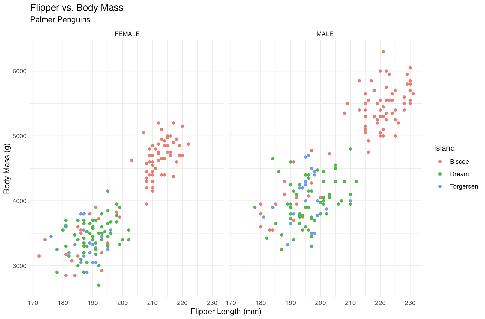
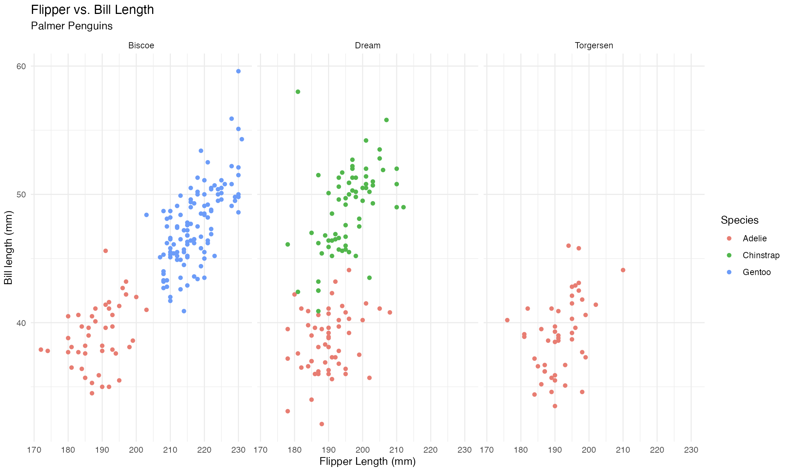

Code
install.packages("glue")
##
## The downloaded binary packages are in
## /var/folders/0x/x5wkbhmx0k74tncn9swz7xpr0000gn/T//RtmpAXeFDN/downloaded_packagesboxMartin Frigaard
April 21, 2023
box?box provides a precise and concise method for using add-on packages and functions. box also doesn’t require bundling your code into R packages to make it reusable. This post covers tackling some common workflow steps to demonstrate how box modules work.
To understand the problem box solves, we’ll review the typical process for using add-on package functions in a standard R sesson and when developing R packages:
Assume I want to use the glue() function from the glue package. The first step is to install it with install.packages("glue")
I’ll use the example from the glue package website:
To use the functions from glue, I’ll need to run library(glue) in the same R session.
If I try to use a function from a package but it hasn’t been attached with library or require, I see the following:
The error above can be confusing, because it doesn’t tell us if the package hasn’t been installed, or if the package hasn’t been attached.
However, after installing glue, I can get around using library by explicitly calling the function from the package namespace (i.e., pkg::foo()):
While this method works, it doesn’t attach the package to the search list (which I check with search())
library() attaches the glue package in the search list and makes the glue() function available to use (without the package:: prefix)
Unfortunately, library() also attaches all the objects from the glue package to the search() list, even though I’m only using a single function.
Read more about namespaces in Advanced R and R packages.
If I want to make the code I write using glue reusable, I can bundle it into an R package. Including glue as an add-on package (i.e., packages not loaded automatically with R) is done with the NAMESPACE file (created and edited via roxygen2 tags), and by listing these packages under Imports in the DESCRIPTION file.
R/ files:All .R files in R packages are placed in the R/ folder. If these files use add-on packages (i.e., library() or package::fun()), I include the @import or @importFrom tag. If I’d like to include and make my_name() available to users, I use the @export tag:
I’ve converted the use of glue() into a small function below:
my_name() is saved as R/my_name.R:
Below is a default roxygen2 skeleton:
As we can see, the default roxygen2 skeleton doesn’t include @import or @importFrom. The general advice is to prefer @importFrom over @import, because @import imports the entire package namespace (only use this in ‘very special situations’ such as ‘heavy use’ of a package functions).
Below is an example of using @importFrom:
While developing my R package, I’ll run devtools::load_all() and devtools::document() frequently, and each time the imported functions are available in the current session and the tags are converted into directives in the NAMESPACE file
A package DESCRIPTION file is managed completely independent of it’s NAMESPACE file. This can be confusing during package development, because it’s easy to assume some kind of connection between the roxygen2 tags, the NAMESPACE file, and the DESCRIPTION file:
However, this is not the case:
To include glue in the DESCRIPTION under Imports, I also need to use usethis::use_package("glue")
As noted in R packages, “The Imports field [in the DESCRIPTION file] makes sure that the packages listed there are installed when your package is installed.” The DESCRIPTION file does not make functions available to the package developer (or the user).
The recommended practices for add-on packages are 1) use the namespace-qualified calls in the R/ scripts (i.e., package::function() with an accompanying @importFrom package function tag), and 2) list these packages in the DESCRIPTION file under Imports or Suggests to make sure a package is installed whenever your package is installed (i.e., with usethis::use_package("package"))
The table below shows the connection between roxygen2 tags, the resulting NAMESPACE entry, and what should be listed in the DESCRIPTION (this is also covered in R packages)
roxygen2, NAMESPACE & DESCRPTION
| roxygen2 tag | NAMESPACE directive | DESCRIPTION |
|---|---|---|
| @importFrom | importFrom() : import selected object from another namespace | Consider listing under ‘Suggests’ |
| @import | import(): import all objects from another package’s namespace | List under ‘Imports’ |
| @export | export() : export the function, method, generic, or class so it’s available outside of the package (in the namespace) | Nothing to list |
box is differentbox doesn’t require installing or attaching add-on packages. Instead, it uses modules to make package functions available. I’ll demonstrate with a simplified example using the glue() package. Assume I have a project folder pkg/,
Projects in RStudio have a hidden folder, .Rproj.user/:
The the following contents are automatically created with a new .Rproj file:
pkg/
├── .Rproj.user
│ ├── 8CC5F70E
│ │ ├── bibliography-index
│ │ ├── ctx
│ │ ├── explorer-cache
│ │ ├── presentation
│ │ ├── profiles-cache
│ │ ├── sources
│ │ │ └── session-16ca0811
│ │ │ └── lock_file
│ │ ├── tutorial
│ │ └── viewer-cache
│ └── shared
│ └── notebooks
│ └── patch-chunk-names
└── pkg.Rproj
14 directories, 3 filesNone of these contents deal with installing or loading packages, but I’ve included it here for full transparency
I’ll put the modules in a box/fun.R file, which I’ll create from the command-line:
Now my pkg folder looks like this:
In pkg/box/fun.R I’ll add the following:
a brief comment with the path to the module
the @export tag from roxygen2
a call to box::use(glue[glue])
In the parent folder, create another file named use.R.
In use.R, use the fun module by calling box::use(box/fun)
View fun by printing it to the console:
This confirms the module has been created.
The glue function is available from fun using the $ (like a column in a data.frame or tibble)
box modules are combinations of named folders and files, but unlike R packages, these folders and files can be nested. The folder/file structure is used for separating modules, the same way we might separate files in a project (i.e., project/data/file.csv and project/code/analysis.R)
box makes the function and package namespacing explicit by using box::use(package[fun])
box also simplifies using module by calling the same function when building/using modules box::use(folder/file):
Below is a slightly more involved example:
Below I’m going to create a module that imports, wrangles, and visualizes data from the palmerpenguins package. (which is installed, but not loaded).
box/importThis workflow starts with an import module in a pengbox project. The code below is stored in pengbox/box/import.R:
In a the master pengbox/run.R file, I’ll use import like so:
spc_tbl_ [344 × 17] (S3: spec_tbl_df/tbl_df/tbl/data.frame)
$ studyName : chr [1:344] "PAL0708" "PAL0708" "PAL0708" "PAL0708" ...
$ Sample Number : num [1:344] 1 2 3 4 5 6 7 8 9 10 ...
$ Species : chr [1:344] "Adelie Penguin (Pygoscelis adeliae)" "Adelie" ...
$ Region : chr [1:344] "Anvers" "Anvers" "Anvers" "Anvers" ...
$ Island : chr [1:344] "Torgersen" "Torgersen" "Torgersen"
$ Stage : chr [1:344] "Adult, 1 Egg Stage" "Adult, 1 Egg Stage"
$ Individual ID : chr [1:344] "N1A1" "N1A2" "N2A1" "N2A2" ...
$ Clutch Completion : chr [1:344] "Yes" "Yes" "Yes" "Yes" ...
$ Date Egg : Date[1:344], format: "2007-11-11" "2007-11-11" ...
$ Culmen Length (mm) : num [1:344] 39.1 39.5 40.3 NA 36.7 39.3 38.9 ...
$ Culmen Depth (mm) : num [1:344] 18.7 17.4 18 NA 19.3 20.6 17.8 19.6 ...
$ Flipper Length (mm): num [1:344] 181 186 195 NA 193 190 181 195 193 ...
$ Body Mass (g) : num [1:344] 3750 3800 3250 NA 3450 ...
$ Sex : chr [1:344] "MALE" "FEMALE" "FEMALE" NA ...
$ Delta 15 N (o/oo) : num [1:344] NA 8.95 8.37 NA 8.77 ...
$ Delta 13 C (o/oo) : num [1:344] NA -24.7 -25.3 NA -25.3 ...
$ Comments : chr [1:344] "Not enough blood for isotopes." NA NA ...I’ll re-write this module in box/import.R using an alias for readrs read_csv() function (rcsv) and include the readr::cols() function to remove the lengthy message.
This code is stored in the box/import.R file:
Using import with the new module is more concise:
spc_tbl_ [344 × 17] (S3: spec_tbl_df/tbl_df/tbl/data.frame)
$ studyName : chr [1:344] "PAL0708" "PAL0708" "PAL0708" "PAL0708" ...
$ Sample Number : num [1:344] 1 2 3 4 5 6 7 8 9 10 ...
$ Species : chr [1:344] "Adelie Penguin (Pygoscelis adeliae)" "Adelie" ...
$ Region : chr [1:344] "Anvers" "Anvers" "Anvers" "Anvers" ...
$ Island : chr [1:344] "Torgersen" "Torgersen" "Torgersen"
$ Stage : chr [1:344] "Adult, 1 Egg Stage" "Adult, 1 Egg Stage"
$ Individual ID : chr [1:344] "N1A1" "N1A2" "N2A1" "N2A2" ...
$ Clutch Completion : chr [1:344] "Yes" "Yes" "Yes" "Yes" ...
$ Date Egg : Date[1:344], format: "2007-11-11" "2007-11-11" ...
$ Culmen Length (mm) : num [1:344] 39.1 39.5 40.3 NA 36.7 39.3 38.9 ...
$ Culmen Depth (mm) : num [1:344] 18.7 17.4 18 NA 19.3 20.6 17.8 19.6 ...
$ Flipper Length (mm): num [1:344] 181 186 195 NA 193 190 181 195 193 ...
$ Body Mass (g) : num [1:344] 3750 3800 3250 NA 3450 ...
$ Sex : chr [1:344] "MALE" "FEMALE" "FEMALE" NA ...
$ Delta 15 N (o/oo) : num [1:344] NA 8.95 8.37 NA 8.77 ...
$ Delta 13 C (o/oo) : num [1:344] NA -24.7 -25.3 NA -25.3 ...
$ Comments : chr [1:344] "Not enough blood for isotopes." NA NA ...box/prepAfter importing the raw penguins data, I’ll write a module for wrangling the data (that also imports the import module).
This module takes the following steps:
box.pathbox/import moduledplyr using [...]stringr::str_extract() and janitor::clean_names()prep() with the wrangling steps# box/prep.R
# reset the path
options(box.path = getwd())
# import alias import module
box::use(box/import)
# wrangle packages, functions, and aliases
box::use(
dplyr[...],
stringr[str_ext = str_extract],
janitor[fix_cols = clean_names]
)
#' @export
prep = function() {
raw <- import$raw()
clean_cols <- fix_cols(raw)
vars <- select(clean_cols,
species,
island,
bill_length_mm = culmen_length_mm,
bill_depth_mm = culmen_depth_mm,
flipper_length_mm,
body_mass_g,
sex)
mutate(vars,
species = str_ext(species, "([[:alpha:]]+)"),
sex = factor(sex))
}We can now the prep module to access the import module for the wrangled dataset.
tibble [344 × 7] (S3: tbl_df/tbl/data.frame)
$ species : chr [1:344] "Adelie" "Adelie" "Adelie" "Adelie" ...
$ island : chr [1:344] "Torgersen" "Torgersen" "Torgersen" "Torgersen" ...
$ bill_length_mm : num [1:344] 39.1 39.5 40.3 NA 36.7 39.3 38.9 39.2 34.1 42 ...
$ bill_depth_mm : num [1:344] 18.7 17.4 18 NA 19.3 20.6 17.8 19.6 18.1 20.2 ...
$ flipper_length_mm: num [1:344] 181 186 195 NA 193 190 181 195 193 190 ...
$ body_mass_g : num [1:344] 3750 3800 3250 NA 3450 ...
$ sex : Factor w/ 2 levels "FEMALE","MALE": 2 1 1 NA 1 2 1 2 NA NA ...These data look like they’re ready for graphing! Time to write another module…
box/plotI will build my visualization with ggplot2 (in the box/plot.R module) and dplyr::filter():
# pengbox/plot.R
# reset the path
options(box.path = getwd())
# import prep module
box::use(box/prep)
# import ggplot2
box::use(
dplyr[filter],
ggplot2 = ggplot2[ggplot, aes, geom_point,
facet_wrap, labs, theme_minimal])
#' @export
scatter <- function() {
prepped <- prep$prep()
# remove missing sex
filtered <- filter(prepped, !is.na(sex))
# plot filtered data
plotted <- ggplot2$ggplot(data = filtered,
ggplot2$aes(
x = flipper_length_mm,
y = body_mass_g,
group = sex
)
) +
ggplot2$geom_point(
ggplot2$aes(color = island)
) +
ggplot2$facet_wrap(. ~ sex) +
ggplot2$labs(x = "Flipper Length (mm)", y = "Body Mass (g)",
color = "Island", title = "Flipper vs. Body Mass",
subtitle = "Palmer Penguins") +
ggplot2$theme_minimal()
plotted
}Check our scatter plot with plot$scatter()

And there you have it! A complete pipeline using box modules! And the total project size (files and folders) is much smaller than building an R package:
Below are the various ways to include packages and functions in box modules:
box modules:
| Inside box::use() | Action |
|---|---|
| box::use( pkg ) | imports ‘pkg’, does not attach any function names |
| box::use( p = pkg ) | imports ‘pkg’ with alias (‘p’), does not attach any function names |
| box::use( pkg = pkg[foo, bar] ) | imports ‘pkg’ and attaches the function names ‘pkg::foo()’ and ‘pkg::bar()’ |
| box::use( pkg[my_foo = foo, …] ) | imports ‘pkg’ with alias for ‘foo’ (‘my_foo’) and attaches all exported function names |
The same workflow could be re-written as nested modules, with folders separating logical steps in an analysis workflow (or application). Consider the folder structure below:
importWith this structure, the raw module is in the import folder:
The raw module–the first step–is nested in the box/graph/wrangle/clean/import/raw.R file
raw module imports the raw .csv data with an aliass for readr’s read_csv()rawIn run.R, I run box/graph/wrangle/clean/import/raw to import the raw module
csv() function imports the raw dataspc_tbl_ [344 × 17] (S3: spec_tbl_df/tbl_df/tbl/data.frame)
$ studyName : chr [1:344] "PAL0708" "PAL0708" "PAL0708" "PAL0708" ...
$ Sample Number : num [1:344] 1 2 3 4 5 6 7 8 9 10 ...
$ Species : chr [1:344] "Adelie Penguin (Pygoscelis adeliae)" "Adelie" ...
$ Region : chr [1:344] "Anvers" "Anvers" "Anvers" "Anvers" ...
$ Island : chr [1:344] "Torgersen" "Torgersen" "Torgersen"
$ Stage : chr [1:344] "Adult, 1 Egg Stage" "Adult, 1 Egg Stage"
$ Individual ID : chr [1:344] "N1A1" "N1A2" "N2A1" "N2A2" ...
$ Clutch Completion : chr [1:344] "Yes" "Yes" "Yes" "Yes" ...
$ Date Egg : Date[1:344], format: "2007-11-11" "2007-11-11" ...
$ Culmen Length (mm) : num [1:344] 39.1 39.5 40.3 NA 36.7 39.3 38.9 ...
$ Culmen Depth (mm) : num [1:344] 18.7 17.4 18 NA 19.3 20.6 17.8 19.6 ...
$ Flipper Length (mm): num [1:344] 181 186 195 NA 193 190 181 195 193 ...
$ Body Mass (g) : num [1:344] 3750 3800 3250 NA 3450 ...
$ Sex : chr [1:344] "MALE" "FEMALE" "FEMALE" NA ...
$ Delta 15 N (o/oo) : num [1:344] NA 8.95 8.37 NA 8.77 ...
$ Delta 13 C (o/oo) : num [1:344] NA -24.7 -25.3 NA -25.3 ...
$ Comments : chr [1:344] "Not enough blood for isotopes." NA NA ...cleanThe clean folder contains the cols module and the snakes() function
snakesThe box/graph/wrangle/clean/cols module standardizes the column names
cols calls the snakes() function, which converts all the column names to lower_snake_case with an alias for janitor::clean_names(), then it imports select from dplyr to subset the columns# box/graph/wrangle/clean/cols.R
# reset the path
options(box.path = getwd())
# use import raw module
box::use(box/graph/wrangle/clean/import/raw)
# columns
box::use(
dplyr[select],
janitor[fix_cols = clean_names]
)
#' @export
snakes = function() {
raw <- raw$csv()
clean_cols <- fix_cols(raw)
vars <- select(clean_cols,
species,
island,
bill_length_mm = culmen_length_mm,
bill_depth_mm = culmen_depth_mm,
flipper_length_mm,
body_mass_g,
sex)
return(vars)
}run.R, we call the cols module to convert the columns names with snakes():wranglevars module to wrangle the plot variablesvarsvars is nested in the wrangle folder, and imports the raw and cols modules
vars module imports mutate and filter from dplyr and an alias for stringr::str_extract()# box/graph/wrangle/vars.R
# reset the path
options(box.path = getwd())
# use clean names module
box::use(box/graph/wrangle/clean/cols)
# wrangle packages/functions
box::use(dplyr[mutate, filter],
stringr[str_ext = str_extract])
#' @export
scatter = function() {
clean_cols <- cols$snakes()
plot_vars <- clean_cols |>
mutate(
species = str_ext(species, "([[:alpha:]]+)"),
species = factor(species),
island = factor(island),
sex = factor(sex)
) |>
# remove missing sex
filter(!is.na(sex))
return(plot_vars)
}In run.R, we check the structure of the output from vars$scatter()
tibble [333 × 7] (S3: tbl_df/tbl/data.frame)
$ species : Factor w/ 3 levels "Adelie","Chinstrap",..: 1 1 1 1 1 1 1 1 1 1 ...
$ island : Factor w/ 3 levels "Biscoe","Dream",..: 3 3 3 3 3 3 3 3 3 3 ...
$ bill_length_mm : num [1:333] 39.1 39.5 40.3 36.7 39.3 38.9 39.2 41.1 38.6 34.6 ...
$ bill_depth_mm : num [1:333] 18.7 17.4 18 19.3 20.6 17.8 19.6 17.6 21.2 21.1 ...
$ flipper_length_mm: num [1:333] 181 186 195 193 190 181 195 182 191 198 ...
$ body_mass_g : num [1:333] 3750 3800 3250 3450 3650 ...
$ sex : Factor w/ 2 levels "FEMALE","MALE": 2 1 1 1 2 1 2 1 2 2 ...graphFinally, we get to the graph module. This module import all preceding modules.
scatterThe scatter module imports the vars module with the data that’s been imported, cleaned, and wrangled.
ggp2() function includes the ggplot2 functions to build a scatter plot.# box/graph/scatter.R
# reset the path
options(box.path = getwd())
# import plot vars module
box::use(box/graph/wrangle/vars)
# import ggplot2
box::use(
ggplot2 = ggplot2[ggplot, aes, geom_point,
facet_wrap, labs, theme_minimal]
)
#' @export
ggp2 <- function() {
scatter_vars <- vars$scatter()
# plot prepped data
ggp2_plot <- ggplot2$ggplot(data = scatter_vars,
ggplot2$aes(
x = flipper_length_mm,
y = bill_length_mm,
group = island
)
) +
ggplot2$geom_point(
ggplot2$aes(color = species)
) +
ggplot2$facet_wrap(. ~ island) +
ggplot2$labs(
x = "Flipper Length (mm)",
y = "Bill length (mm)",
color = "Species",
group = "Island",
title = "Flipper vs. Bill Length",
subtitle = "Palmer Penguins"
) +
ggplot2$theme_minimal()
ggp2_plot
}In run.R, the final module call produces the plot.

In this post I’ve covered how the box package uses modules to separate your analysis and workflow into small, modular scripts. Nesting modules also adds a flexibility R packages do not have (because everything has to be contained in the R/ folder).
Both versions of the projects created in this example ended up with very few lines of code, and didn’t require a creating a NAMESPACE or DESCRIPTION file.
View the final project here.